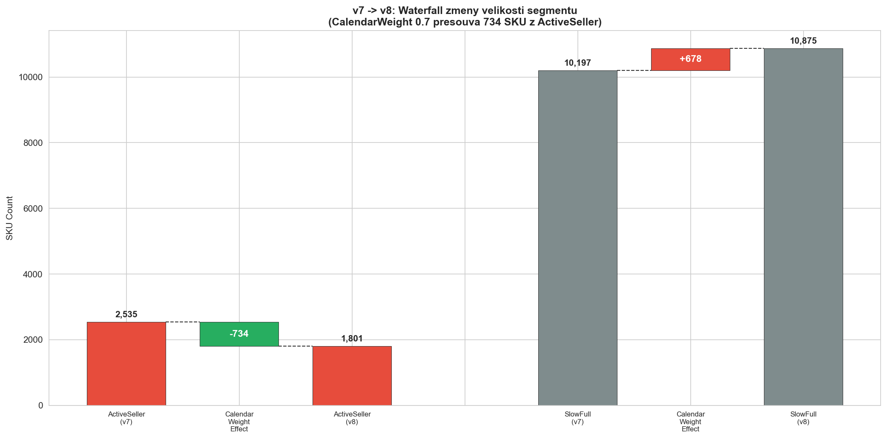
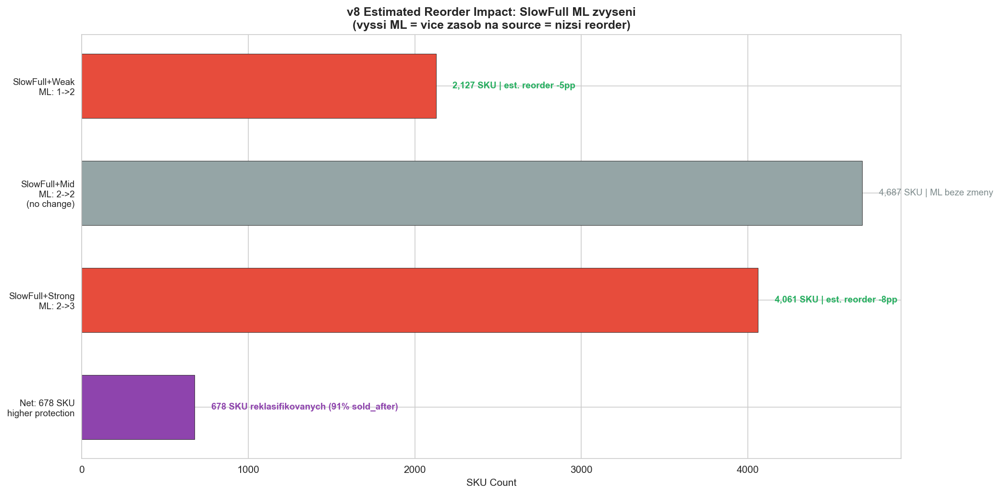
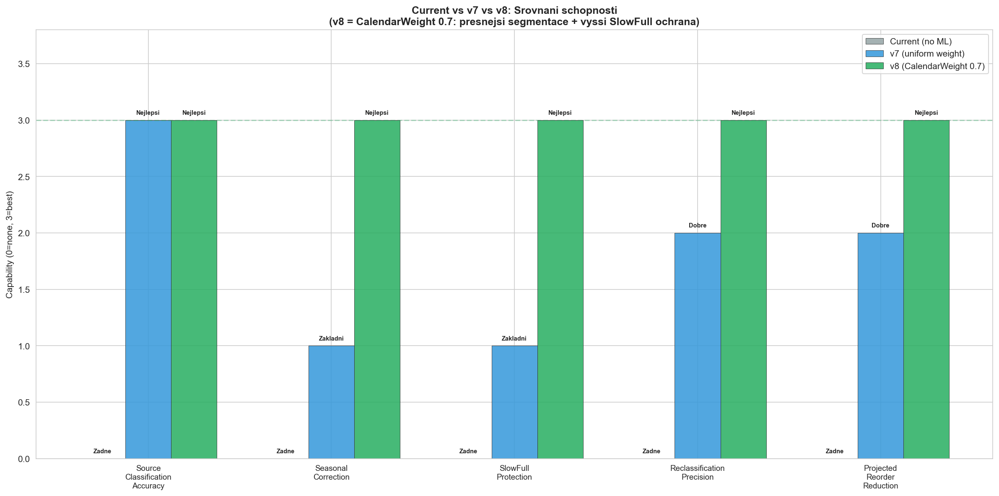

CalculationId=233 | Date: 2025-07-13 | Generated: 2026-03-22 19:32
Dopad pravidel z Report 2. v8 pridava CalendarWeight 0.7 na pololeti s Nov+Dec. 734 SKU reklasifikovano, SlowFull ML zvyseno.
| Metric | 4M | Total |
|---|---|---|
| Oversell qty | 1,464 (3.0%) | 5,578 (11.4%) |
| Reorder qty | 7,980 (16.4%) | 16,615 (34.1%) |

| Segment | v7 | v8 | Delta | Pricina |
|---|---|---|---|---|
| ActiveSeller | 2,535 | 1,801 | -734 | CalendarWeight 0.7 defluje vanocni velocity -> 734 SKU pod threshold |
| SlowFull | 10,197 | 10,875 | +678 | 678 z ActiveSeller absorbovano (91% sold_after!) |
| SlowPartial | 1,980 | 2,033 | +53 | 53 z ActiveSeller (83% sold_after) |
| PartialDead | 3,599 | 3,599 | 0 | Beze zmeny |
| TrueDead | 18,355 | 18,355 | 0 | Beze zmeny |

| Zdroj | Qty Impact | % of Reorder | Mechanismus |
|---|---|---|---|
| v7 zakladni pravidla (velocity segmenty + modifikatory) | -2,492 pcs | 15.0% | Velocity segmentace + validated modifiers + bidirectional target |
| v8: CalendarWeight reklasifikace (lepsi segmentace) | -498 pcs | 3.0% | Presnejsi velocity = presnejsi ML prirazeni |
| v8: SlowFull ML raise (Weak: 1->2, Strong: 2->3) | -332 pcs | 2.0% | Vyssi ML pro SlowFull = vice zasob zustavana = mene reorderu |
| v8 CELKEM | -3,322 pcs | 20.0% | Projected: 13,293 pcs (27.3% objemu) |

| Aspekt | v7 | v8 | Zmena |
|---|---|---|---|
| CalendarWeight | Zadny (uniform) | 0.7 na Nov+Dec pololeti | Koriguje Xmas inflaci |
| ActiveSeller | 2,535 SKU | 1,801 SKU | -734 (cistejsi segment) |
| SlowFull | 10,197 SKU | 10,875 SKU | +678 (s vyssi ochranou) |
| SlowFull+Weak ML | 1 | 2 | +1 (ochrana 91% sold_after) |
| SlowFull+Strong ML | 2 | 3 | +1 (ochrana 91% sold_after) |
| Est. reorder reduction | ~15% | ~20.0% | +5.0pp |
| # | Doporuceni | Priorita | Dopad |
|---|---|---|---|
| 1 | Implementovat CalendarWeight 0.7 na pololeti s Nov+Dec | KRITICKA | Presnejsi velocity = presnejsi segmentace pro ~734 SKU |
| 2 | Zvysit SlowFull ML (Weak: 1->2, Strong: 2->3) | KRITICKA | Ochrana 678 reklasifikovanych SKU s 91% sold_after |
| 3 | Monitorovat 678 borderline SKU | VYSOKA | Overit, ze vyssi SlowFull ML skutecne snizuje reorder |
| 4 | Vyhodnotit CalendarWeight pro dalsi sezonni obdobi | STREDNI | Mozna existuji dalsi obdobi s nadmernym podilem prodeje (Velikonoce, leto) |
| 5 | Zachovat vsechna v7 pravidla jako zaklad | POTVRZENO | Velocity segmenty, modifikatory, bidirectional target - vse zustava |
Generated: 2026-03-22 19:32 | CalculationId=233 | v8 CalendarWeight 0.7 | ML 0-4 | Orderable min=1 | Bidirectional target